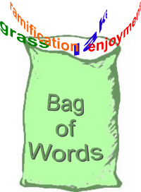
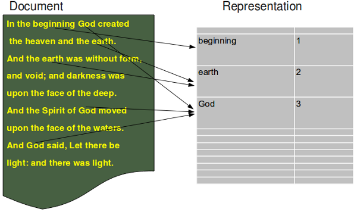

Previous Chapter: Introduction into Text Classification using Naive Bayes
Next Chapter: Example for recursive Programming: Towers of Hanoi
Next Chapter: Example for recursive Programming: Towers of Hanoi
Text Classification in Python
Introduction
 In the previous chapter, we have deduced the formula for calculating the probability that a document d belongs to a category or class c, denoted as P(c|d).We have transformed the standard formular for P(c|d), as it is used in many treatises1, into a numerically stable form.
We use a Naive Bayes classifier for our implementation in Python. The formal introduction into the Naive Bayes approach can be found in our previous chapter.
Python is ideal for text classification, because of it's strong string class with powerful methods. Furthermore the regular expression module re of Python provides the user with tools, which are way beyond other programming languages.
The only downside might be, that this Python implementation is not tuned for efficiency.
The Python Implementation
Warning: The implemenatiation is in Python 3 and it is not compatible to Python 2.x!Document Representation
The document representation, which is based on the bag of word model, is illustrated in the following diagram:
Imports Needed
Our implementation needs the regular expression module re and the os module:import re, os
BagOfWords Class
class BagOfWords(object):
""" Implementing a bag of words, words corresponding with their frequency of usages in a "document"
for usage by the Document class, DocumentClass class and the Pool class."""
def __init__(self):
self.__number_of_words = 0
self.__bag_of_words = {}
def __add__(self,other):
""" Overloading of the "+" operator to join two BagOfWords """
erg = BagOfWords()
sum = erg.__bag_of_words
for key in self.__bag_of_words:
sum[key] = self.__bag_of_words[key]
if key in other.__bag_of_words:
sum[key] += other.__bag_of_words[key]
for key in other.__bag_of_words:
if key not in sum:
sum[key] = other.__bag_of_words[key]
return erg
def add_word(self,word):
""" A word is added in the dictionary __bag_of_words"""
self.__number_of_words += 1
if word in self.__bag_of_words:
self.__bag_of_words[word] += 1
else:
self.__bag_of_words[word] = 1
def len(self):
""" Returning the number of different words of an object """
return len(self.__bag_of_words)
def Words(self):
""" Returning a list of the words contained in the object """
return self.__bag_of_words.keys()
def BagOfWords(self):
""" Returning the dictionary, containing the words (keys) with their frequency (values)"""
return self.__bag_of_words
def WordFreq(self,word):
""" Returning the frequency of a word """
if word in self.__bag_of_words:
return self.__bag_of_words[word]
else:
return 0
The Document Class
class Document(object):
""" Used both for learning (training) documents and for testing documents. The optional parameter lear
has to be set to True, if a classificator should be trained. If it is a test document learn has to be set to False. """
_vocabulary = BagOfWords()
def __init__(self, vocabulary):
self.__name = ""
self.__document_class = None
self._words_and_freq = BagOfWords()
Document._vocabulary = vocabulary
def read_document(self,filename, learn=False):
""" A document is read. It is assumed, that the document is either encoded in utf-8 or in iso-8859... (latin-1).
The words of the document are stored in a Bag of Words, i.e. self._words_and_freq = BagOfWords() """
try:
text = open(filename,"r", encoding='utf-8').read()
except UnicodeDecodeError:
text = open(filename,"r", encoding='latin-1').read()
text = text.lower()
words = re.split("[^\w‰ˆ¸ƒ÷‹fl]*",text)
self._number_of_words = 0
for word in words:
self._words_and_freq.add_word(word)
if learn:
Document._vocabulary.add_word(word)
def __add__(self,other):
""" Overloading the "+" operator. Adding two documents consists in adding the BagOfWords of the Documents """
res = Document(Document._vocabulary)
res._words_and_freq = self._words_and_freq + other._words_and_freq
return res
def vocabulary_length(self):
""" Returning the length of the vocabulary """
return len(Document._vocabulary)
def WordsAndFreq(self):
""" Returning the dictionary, containing the words (keys) with their frequency (values) as contained
in the BagOfWords attribute of the document"""
return self._words_and_freq.BagOfWords()
def Words(self):
""" Returning the words of the Document object """
d = self._words_and_freq.BagOfWords()
return d.keys()
def WordFreq(self,word):
""" Returning the number of times the word "word" appeared in the document """
bow = self._words_and_freq.BagOfWords()
if word in bow:
return bow[word]
else:
return 0
def __and__(self, other):
""" Intersection of two documents. A list of words occuring in both documents is returned """
intersection = []
words1 = self.Words()
for word in other.Words():
if word in words1:
intersection += [word]
return intersection
The DocumentClass Class
The class DocumentClass is the class for our Document categories. It's inheriting from our Document class.
class DocumentClass(Document):
def __init__(self, vocabulary):
Document.__init__(self, vocabulary)
self._number_of_docs = 0
def Probability(self,word):
""" returns the probabilty of the word "word" given the class "self" """
voc_len = Document._vocabulary.len()
SumN = 0
for i in range(voc_len):
SumN = DocumentClass._vocabulary.WordFreq(word)
N = self._words_and_freq.WordFreq(word)
erg = 1 + N
erg /= voc_len + SumN
return erg
def __add__(self,other):
""" Overloading the "+" operator. Adding two DocumentClass objects consists in adding the
BagOfWords of the DocumentClass objectss """
res = DocumentClass(self._vocabulary)
res._words_and_freq = self._words_and_freq + other._words_and_freq
return res
def SetNumberOfDocs(self, number):
self._number_of_docs = number
def NumberOfDocuments(self):
return self._number_of_docs
The Pool class
The pool is the class, where the document classes are learnt and kept:
class Pool(object):
def __init__(self):
self.__document_classes = {}
self.__vocabulary = BagOfWords()
def sum_words_in_class(self, dclass):
""" The number of times all different words of a dclass appear in a class """
sum = 0
for word in self.__vocabulary.Words():
WaF = self.__document_classes[dclass].WordsAndFreq()
if word in WaF:
sum += WaF[word]
return sum
def learn(self, directory, dclass_name):
""" directory is a path, where the files of the class with the name dclass_name can be found """
x = DocumentClass(self.__vocabulary)
dir = os.listdir(directory)
for file in dir:
d = Document(self.__vocabulary)
print(directory + "/" + file)
d.read_document(directory + "/" + file, learn = True)
x = x + d
self.__document_classes[dclass_name] = x
x.SetNumberOfDocs(len(dir))
def Probability(self, doc, dclass = ""):
"""Calculates the probability for a class dclass given a document doc"""
if dclass:
sum_dclass = self.sum_words_in_class(dclass)
prob = 0
d = Document(self.__vocabulary)
d.read_document(doc)
for j in self.__document_classes:
sum_j = self.sum_words_in_class(j)
prod = 1
for i in d.Words():
wf_dclass = 1 + self.__document_classes[dclass].WordFreq(i)
wf = 1 + self.__document_classes[j].WordFreq(i)
r = wf * sum_dclass / (wf_dclass * sum_j)
prod *= r
prob += prod * self.__document_classes[j].NumberOfDocuments() / self.__document_classes[dclass].NumberOfDocuments()
if prob != 0:
return 1 / prob
else:
return -1
else:
prob_list = []
for dclass in self.__document_classes:
prob = self.Probability(doc, dclass)
prob_list.append([dclass,prob])
prob_list.sort(key = lambda x: x[1], reverse = True)
return prob_list
def DocumentIntersectionWithClasses(self, doc_name):
res = [doc_name]
for dc in self.__document_classes:
d = Document(self.__vocabulary)
d.read_document(doc_name, learn=False)
o = self.__document_classes[dc] & d
intersection_ratio = len(o) / len(d.Words())
res += (dc, intersection_ratio)
return res
Using the Classifier
To be able to learn and test a classifier, wie offer a "Learn and test set to Download". The learn and test sets contain (old) jokes labelled in six categories: "clinton", "lawyer", "math", "medical", "music", "sex".
from NaiveBayes import Pool
import os
DClasses = ["clinton", "lawyer", "math", "medical", "music", "sex"]
base = "../learn/"
p = Pool()
for i in DClasses:
p.learn(base + i, i)
base = "../test/"
for i in DClasses:
dir = os.listdir(base + i)
for file in dir:
res = p.Probability(base + i + "/" + file)
print(i + ": " + file + ": " + str(res))
Footnotes:
1 Please see our "Further Reading" section of our previous chapter